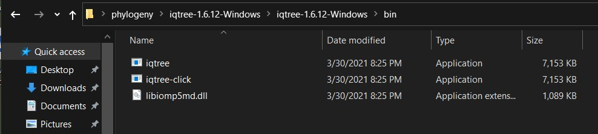
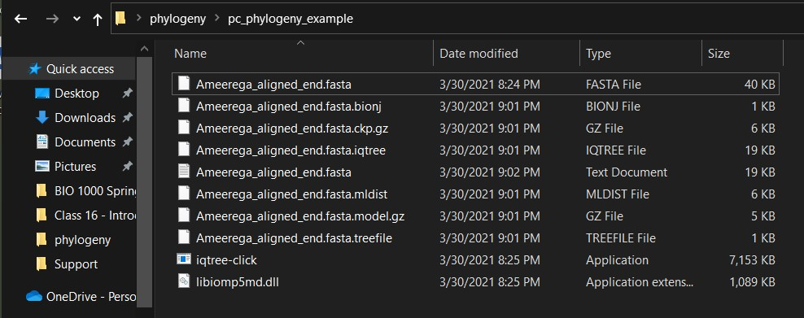
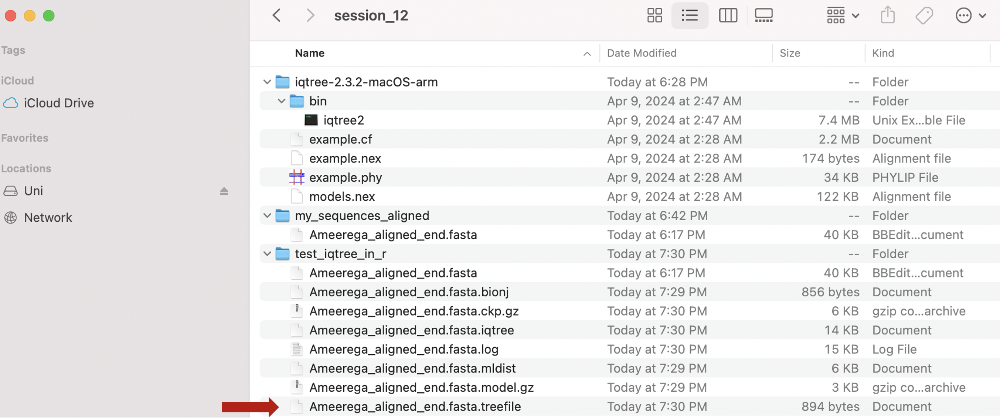

Session 12 – Estimating Phylogenetic Trees
Most sequence alignments can be used to estimate phylogenies. These are hypotheses of evolutionary relationships between sequences and the species or populations that they represent. Phylogenies can be estimated from DNA, RNA and amino acid sequences (other features like morphology can also be used). The tree topology provides information about the observed organisms (i.e., source of sequences) at the tips or leaves of the tree, the internal vertices or nodes that represent intermediate ancestors (i.e., likely extinct), and the edges or connecting lines represent evolutionary ancestor-descendant relationships. The value of phylogenies is fundamental in the study biological diversity from taxonomy, epidemiology and population genetics. Data for molecular phylogenies are easy to collect, yet problems derived from homoplasy, reversals and incomplete lineage sorting might affect the reliability of phylogenetic hypotheses.
One of Charles Darwin greatest insights was phylogenetic trees that has shape modern biology.
12.1 Phylogeny inference with iqtree2
I do not use R or any R packages to estimate phylogenies, there are so many good programs on their own that can to this better and faster. We can devote many sessions to talk about these software, yet we will concentrate only in iqtree2 that has emerged as a fast and reliable software that also includes molecular model testing and sequence partition. Likewise, iqtree2 has an extensive manual here and it also can be easily manipulated within R. This will also illustrate how R can manage software outside its environment and bring back results to it.
12.2 Installing iqtree2 in macOS
1) We will start with installing iqtree2 and locating the path of the binary file that will be used R to run phylogenetic estimations.
a) You need to go first to iqtree2 download website and choose the 64-bit multicore version for your operative system (i.e., macOS, Windows or Linux). Make sure that it is version 2: COVID-19 release 2.1.2 (October 22, 2020).
b) This is a zip file and you need to uncompress it and search for the folder with the precompiled version (in masOS is called bin) and copy that file to directly that you will like to store such software. In my case, I named my_programs
c) Now, the my_programs folder includes the binary iqtree2 that is the only thing that you might need to run this program.
d) For macOS: You can test if this program is working by opening the Terminal on your computer. Most people do not have Terminal in their dock for easy access software. To open Terminal, you need to access your hard drive (click on it). Then, look for Applications folder (click on it). In this folder look for subfolder Utilities.
e) For macOS: the Terminal icon is in the Utilities folder and you can create a shortcut by draging Terminal to your dock. However, you do not have to do this to test iqtree2.
f) For macOS: You can activate Terminal by double clicking on it and a new window will appear like the one below.
g) For macOS: The working directory by default is root. You need to change working directory by typing cd and dragging and dropping the folder that contains iqtree2 (i.e., in my case, the folder my_programs).
h) For macOS: After pressing enter, the working directory will be now my_programs. You can type ls and enter. You will get that iqtree2 file is there.
i) For macOS: To make sure that iqtree2 will work, you will need to type ./iqtree2 and press enter.
j) For macOS: After pressing enter, you should get the following message.

NOTICE: For PCs, the process to run iqtree2 outside R are provided in here.
12.3 Installing and running iqtree2 in a PC
2) We will start with installing iqtree2 and locating the path of the binary file that will be used R to run phylogenetic estimations.
a) You need to go first to iqtree2 download website and choose the 64-bit multicore version for your operative system (i.e., macOS, Windows or Linux). Make sure that it is version 2: COVID-19 release 2.1.2 (October 22, 2020).
b) This is a zip file and you need to uncompress it and search for the folder with the precompiled version (in PC is called bin) and you will see three files: iqtree, iqtree-click and libiomp5md.dll.

c) The iqtree_runner_R function DOES NOT run in PCs, but it will give the commands that you need to run this software.
d) On the folder that contains your alignment, you need to copy that files iqtree-click and libiomp5md.dll to be able to run the iqtree2 program. This folder should contain the aligned sequence (Session 12) or you can access some these files with aligned data and download them from the GitHub repository for this class (e.g., Ameerega_aligned_end.fasta).
e) To activate the interactive iqtree command building tool, you need to double click on the iqtree-click (Notice that windows might prevent you from running so, you will need to allow the program to run).
You will get the following window.
f) Now, you will interact with this window bulding commands to run iqtree by presing y.
g) The first command will be -s for the alignment input and then e to extend.
h) We will add to the command line the name of the alignment in the folder Ameerega_aligned_end.fasta for the alignment input and then e to extend.
h) We will continue adding to the command line the options for model -m, then e to extend, then MFP+MERGE.
i) After we have included all commands to the command line, we will type y to confirm.
j) If correct, the program will run and you will have to wait until it finish and then press return to exit.
k) In the folder, you will see the output files. The file *.treefile will contain the resulting phylogeny.

l) To run other commands in this format (e.g., bootstraps or with partitions), you need to run iqtree_runner_R first to get all the necessary input commands. They will look as follows on the first few lines of the iqtree_runner_R function output (even if it does not run):
## this is an example of the commands that you need to input in the format for PCs
[1] "iqtree2 -s Ameerega_aligned_end.fasta -m MFP+MERGE "12.4 Loading the iqtree_runner_R function
3) To run software outside R requires several components and scripting outside this workshop, I will not go in detail on these other than provide you with a function that will allow you to run our aligned sequence matrices (Session 12) or you can access some these files with aligned data on the GitHub repository for this class (e.g., Ameerega_aligned_end.fasta). The function provided below allows to run iqtree2 and importing back the tree and its nodal support after the analyses. However, it only works in macOS and for PC users please follow instructions on 2). If you have questions about the iqtree_runner_R function below, please contact me for more details.
You need to install two packages doParallel and ape before we run iqtree_runner_R. We will not get into details about doParallel, but we will use ape for other phylogenetic analyses.
## it requires to install these R packages
install.packages("doParallel")
install.packages("ape")Please copy an paste the text below for iqtree_runner_R in R. This function is to run iqtree2 from your computer, but it has been used in macOS. We will need to test for PCs
## make sure that you have the required packages
require(doParallel)
require(ape)
## iqtree_runner function copy text from here until END OF FUNCTION (find this below)
iqtree_runner_R <- function(input_alignment_file_user,
iqtree_bin_location_user,
run_iqtree_call_user = c("serial","parallel"),
iqtree_quiet_user = FALSE,
iqtree_redo_user = FALSE,
iqtree_prefix_user = NULL,
iqtree_input_model_m_user = NULL,
iqtree_mtree_user = FALSE,
iqtree_sequence_type_st_user = NULL,
iqtree_UFBoot_B_user = NULL,
iqtree_UFBoot_bnni_user = TRUE,
iqtree_nonpara_boot_b_user = NULL,
iqtree_SHaLRT_alrt_user = NULL,
iqtree_multicore_T_user = NULL,
iqtree_maxcores_ntmax_user = NULL,
iqtree_partition_user = NULL,
iqtree_partition_if_by_position_user = TRUE,
iqtree_partition_file_user = NULL,
iqtree_chronogram_from_tree_file_user = NULL,
iqtree_chronogram_mrca_bounds_user = NULL,
iqtree_date_file_user = NULL,
iqtree_pass_parameters_user = NULL){
## require libraries
require(doParallel)
require(ape)
############# input from user
## sequence and tree arguments
input_files <- input_alignment_file_user
# iqtree location
iqtree_bin_location <- iqtree_bin_location_user
# serial or parallel calls
run_iqtree <- run_iqtree_call_user
iqtree_quiet <- iqtree_quiet_user
####### basic iqtree parameters
# overwrite all previous output: -redo
iqtree_redo <- iqtree_redo_user
# add prefi: --prefix
iqtree_prefix <- iqtree_prefix_user
# add model: -m
iqtree_model <- iqtree_input_model_m_user
# increase accuracy: -mtree
iqtree_mtree <- iqtree_mtree_user
# Specify sequence type as either of NULL (autodetect) DNA, AA, BIN, MORPH, CODON or NT2AA for DNA
iqtree_st <- iqtree_sequence_type_st_user
# UFBoot mode: -B 1000
iqtree_UFBoot_B <- iqtree_UFBoot_B_user
# Red_impact_UFBoot
iqtree_UFBoot_bnni <- iqtree_UFBoot_bnni_user
# nonparametric bootstrap -b 100
iqtree_nonpara_b <- iqtree_nonpara_boot_b_user
# Assessing branch supports with single branch tests SH-like approximate likelihood ratio test: -alrt 1000
iqtree_alrt <- iqtree_SHaLRT_alrt_user
# multicore -T AUTO -T 2
iqtree_multicore_T <- iqtree_multicore_T_user
# maxcores -ntmax
iqtree_maxcores_ntmax <- iqtree_maxcores_ntmax_user
############## iqtree_partition_user
iqtree_partition <- iqtree_partition_user
do_by_codon_pos <- iqtree_partition_if_by_position_user
if(!is.null(iqtree_partition)) {
iqtree_partition_matrix <- do.call(rbind,iqtree_partition)
partitions_names <- rownames(iqtree_partition_matrix)
type_partitions <- iqtree_partition_matrix[,1]
start_part <- as.numeric(iqtree_partition_matrix[,2])
end_part <- as.numeric(iqtree_partition_matrix[,3])
codon_part <- iqtree_partition_matrix[,4]
iqtree_partition_df <- data.frame(partition_name = partitions_names, type = type_partitions, start = start_part, end = end_part, codon = codon_part, stringsAsFactors = FALSE)
rownames(iqtree_partition_df) <- NULL
# output file name
out_part_file <- sub(".*/", "", input_files)
out_part_file <- sub("[.]", "_", out_part_file)
out_part_file <- paste0(out_part_file,"_partition.txt")
for(i in 1:nrow(iqtree_partition_df)) {
# i <- 3
one_line <- paste0(iqtree_partition_df$type[i], ", ", iqtree_partition_df$partition_name[i], " = ",
iqtree_partition_df$start[i], "-", iqtree_partition_df$end[i])
if(!is.na(iqtree_partition_df$codon[i])) {
# do_by_codon_pos
if(do_by_codon_pos) {
pos1_start <- iqtree_partition_df$start[i]
pos1_name <- paste0(iqtree_partition_df$partition_name[i],"_pos1")
pos2_start <- iqtree_partition_df$start[i]+1
pos2_name <- paste0(iqtree_partition_df$partition_name[i],"_pos2")
pos3_start <- iqtree_partition_df$start[i]+2
pos3_name <- paste0(iqtree_partition_df$partition_name[i],"_pos3")
one_line <- paste0(iqtree_partition_df$type[i], ", ", pos1_name, " = ", pos1_start, "-", iqtree_partition_df$end[i], "\\", iqtree_partition_df$codon[i], "\n",
iqtree_partition_df$type[i], ", ", pos2_name, " = ", pos2_start, "-", iqtree_partition_df$end[i], "\\", iqtree_partition_df$codon[i], "\n",
iqtree_partition_df$type[i], ", ", pos3_name, " = ", pos3_start, "-", iqtree_partition_df$end[i], "\\", iqtree_partition_df$codon[i], "\n")
}
}
# one_line <- paste0(one_line, "\\", iqtree_partition_df$codon[i]) }
cat(one_line,file=out_part_file,sep="\n",append=TRUE)
}
rm(i)
iqtree_partition_files <- out_part_file
} else {
iqtree_partition_files <- iqtree_partition_file_user
}
############## chronogram_functions
iqtree_chronogram_from_tree <- iqtree_chronogram_from_tree_file_user
iqtree_mrca_bounds <- iqtree_chronogram_mrca_bounds_user
if(!is.null(iqtree_mrca_bounds)) {
# name for DATE_FILE
out_part_file <- sub(".*/", "", input_files)
out_part_file <- sub("[.]", "_", out_part_file)
out_date_file <- paste0(out_part_file,"_dates.txt")
# build DATE_FILE
n_total <- length(iqtree_mrca_bounds)
n_constraints <- seq(1,by=2, to=n_total)
for(i in n_constraints) {
# i <- 1
taxa_part <- paste0(iqtree_mrca_bounds[[i]], collapse=",")
date_part <- paste0("-", iqtree_mrca_bounds[[i+1]])
one_line <- paste0(taxa_part, " ", date_part)
# one_line <- paste0(one_line, "\\", iqtree_partition_df$codon[i]) }
cat(one_line,file=out_date_file,sep="\n",append=TRUE)
}
rm(i)
iqtree_date_files <- out_date_file
} else {
iqtree_date_files <- iqtree_date_file_user
}
# iq pass paramters
iqtree_pass <- iqtree_pass_parameters_user
# get work directory to go back
master_wd_directory <- getwd()
## get iqtree path
path_of_iqtree <- paste0(iqtree_bin_location)
###### prepare iqtree commands
list_iqtree_scripts <- list()
name_of_analyses_iqtree <- character()
counter <- 0
for(i in 1:length(input_files)) {
# i <- 1
one_alignment_file <- input_files[i]
counter <- counter + 1
# simplify names
one_input_file <- sub(".*/", "", one_alignment_file)
# prepare commands
line_iqtree <- paste0("iqtree2 -s ", one_input_file, " ")
# list of iqtre parameters
list_of_iqtree <- c(line_iqtree)
counter_2 <- 1
# Specify sequence type as either of NULL (autodetect) DNA, AA, BIN, MORPH, CODON or NT2AA for DNA
if(!is.null(iqtree_st)) { counter_2 <- counter_2 + 1
out_line <- paste0(" -st ", iqtree_st, " ")
list_of_iqtree[counter_2] <- out_line
}
# add prefi: --prefix
if(!is.null(iqtree_prefix)) { counter_2 <- counter_2 + 1
out_line <- paste0(" --prefix ", iqtree_prefix, " ")
list_of_iqtree[counter_2] <- out_line
}
# add model: -m
if(!is.null(iqtree_model)) { counter_2 <- counter_2 + 1
out_line <- paste0(" -m ", iqtree_model, " ")
list_of_iqtree[counter_2] <- out_line
}
# increase accuracy: -mtree
if(iqtree_mtree) { counter_2 <- counter_2 + 1
out_line <- paste0(" -mtree ")
list_of_iqtree[counter_2] <- out_line
}
# overwrite all previous output: -redo
if(iqtree_redo) { counter_2 <- counter_2 + 1
out_line <- paste0(" -redo ")
list_of_iqtree[counter_2] <- out_line
}
# add partition
if(!is.null(iqtree_partition_files)) {counter_2 <- counter_2 + 1
out_line <- paste0(" -p ", iqtree_partition_files[i])
list_of_iqtree[counter_2] <- out_line
}
# add DATE_FILE
if(is.null(iqtree_chronogram_from_tree)) {
if(!is.null(iqtree_date_files)) {counter_2 <- counter_2 + 1
out_line <- paste0(" --date ", iqtree_date_files[i], ' --date-tip 0')
list_of_iqtree[counter_2] <- out_line
}
}
# make chronogram from tree
if(!is.null(iqtree_chronogram_from_tree)) {counter_2 <- counter_2 + 1
out_line <- paste0(" --date ", iqtree_date_files[i], ' --date-tip 0', " -te ", iqtree_chronogram_from_tree)
list_of_iqtree[counter_2] <- out_line
}
##### ultra fast bootstrap
# UFBoot mode: -B 1000
if(!is.null(iqtree_UFBoot_B)) { counter_2 <- counter_2 + 1
out_line <- paste0(" -B ", iqtree_UFBoot_B, " ")
list_of_iqtree[counter_2] <- out_line
}
# Red_impact_UFBoot
if(!is.null(iqtree_UFBoot_B)) {
if(iqtree_UFBoot_bnni) { counter_2 <- counter_2 + 1
out_line <- paste0(" -bnni ")
list_of_iqtree[counter_2] <- out_line
}
}
##### non-parameteric bootstrap
# nonparametric bootstrap -b 100
if(!is.null(iqtree_nonpara_b)) { counter_2 <- counter_2 + 1
out_line <- paste0(" -b ", iqtree_nonpara_b, " ")
list_of_iqtree[counter_2] <- out_line
}
##### SH-like approximate likelihood ratio test
# Assessing branch supports with single branch tests : -alrt 1000
if(!is.null(iqtree_alrt)) { counter_2 <- counter_2 + 1
out_line <- paste0(" -alrt ", iqtree_alrt, " ")
list_of_iqtree[counter_2] <- out_line
}
### multicore
# multicore -T AUTO -T 2
if(!is.null(iqtree_multicore_T)) { counter_2 <- counter_2 + 1
out_line <- paste0(" -T ", iqtree_multicore_T, " ")
list_of_iqtree[counter_2] <- out_line
}
if(!is.null(iqtree_multicore_T)) {
if(!is.null(iqtree_maxcores_ntmax)) {
counter_2 <- counter_2 + 1
out_line <- paste0(" -ntmax ", iqtree_maxcores_ntmax, " ")
list_of_iqtree[counter_2] <- out_line
}
}
### iqtree pass paramters
if(!is.null(iqtree_pass)) { counter_2 <- counter_2 + 1
out_line <- paste0(" ", iqtree_pass, " ")
list_of_iqtree[counter_2] <- out_line
}
# quiet
if(iqtree_quiet) { counter_2 <- counter_2 + 1
out_line <- paste0(" -quiet ")
list_of_iqtree[counter_2] <- out_line
}
### all lines together
iqtree_out <- paste0(list_of_iqtree, collapse = " ")
print(iqtree_out)
list_iqtree_scripts[[counter]] <- iqtree_out
name_of_analyses_iqtree[counter] <- one_input_file
}
rm(i)
if(exists("counter")){rm(counter)}
if(exists("counter_2")){rm(counter_2)}
#####################################################################################
#### open and run iqtree from R
# create vector to export path -- export PATH=/opt/local/bin:/opt/local/sbin:$PATH
export_path_iqtree_bins <- normalizePath(iqtree_bin_location)
export_path_iqtree_vector <- paste0("export PATH=",export_path_iqtree_bins,":$PATH")
## iqtree execute function
execute_iqtree_terminal <- function(export_path_section = export_path_iqtree_vector,
iqtree_command,
intern = FALSE,
wait = FALSE){
system(paste0(export_path_section, "\n",
iqtree_command, "\n"),
intern = intern,
wait = wait)
}
## run list elements with iqtree commands
## serial
# run_iqtree <- "serial"
if(run_iqtree == "serial") {
cat("\n****** started serial analisis of: ", length(list_iqtree_scripts), "\n" )
for(j in 1:length(list_iqtree_scripts)) {
cat("***** iqtree analysis name: ",name_of_analyses_iqtree[j], "\n")
cat("***** iqtree commands: ", list_iqtree_scripts[[j]], "\n")
execute_iqtree_terminal(export_path_section = export_path_iqtree_vector,
iqtree_command = list_iqtree_scripts[[j]],
intern = FALSE,
wait = TRUE)
cat("***** DONE ***** \n")
}
rm(j)
}
### parallel
# run_iqtree <- "parallel"
if(run_iqtree == "parallel") {
cat("\n****** started parallel analisis of: ", length(list_iqtree_scripts), "\n" )
print(name_of_analyses_iqtree)
ncores <- parallel::detectCores()
cl <- makeCluster(ncores)
registerDoParallel(cl)
foreach(iqtree_i=list_iqtree_scripts, .export = "execute_iqtree_terminal") %dopar%
{execute_iqtree_terminal(iqtree_command=iqtree_i)}
parallel::stopCluster(cl)
cat("\n ****** DONE ****** \n")
}
### to return to user grab treefile
iqtrees_vector <- list.files(pattern = "\\.treefile$", ignore.case=TRUE)
list_of_trees <- list()
for(i in 1:length(iqtrees_vector)) {list_of_trees[[i]] <- ape::read.tree(iqtrees_vector[i])}
rm(i)
### if chronograms
iqtree_chronograms <- list.files(pattern = "\\.timetree.nex$", ignore.case=TRUE)
if(length(iqtree_chronograms) > 0) {
for(i in 1:length(iqtree_chronograms)) {
one_chronogram <- ape::read.nexus(iqtree_chronograms[i])
n_trees <- length(list_of_trees)
list_of_trees[[n_trees+1]] <- one_chronogram }
rm(i)
}
############ open and run iqtree from R: DONE
setwd(master_wd_directory)
cat("\n\n ************* iqtree outfiles written to ************* \n")
print(master_wd_directory)
return(list_of_trees)
}
## END OF FUNCTION After you have copied and pasted the function iqtree_runner_R(), you will not get any result yet. However, the function will be in memory ready to run.
12.5 Running iqtree2 from R
After you have loaded the function iqtree_runner_R(), we will perform several analyses. IMPORTANT Your alignment file (fasta or nexus) cannot have taxa, terminals or sequences with the same name; if you want to run including such sequences make sure that you label them accordingly.
12.6 One marker and no partitions
In most cases, you just want a phylogenetic tree estimated from your sequences. This makes iqtree2 extremely powerful as it can automatically select molecular model that best fits your data (i.e., ModelFinder section).
4) We will start with the most simple using the COI aligned sequences in the file Ameerega_aligned_end.fasta.
a) Set up your working directory (e.g., my_phylogeny_1) and get its path.
## this is exclusive to your OWN COMPUTER change it accordingly
setwd("~/Desktop/Teach_R/my_working_directory/my_phylogeny_1")b) find the file with aligned sequences: Ameerega_aligned_end.fasta and copy that file to your working directory (e.g., my_phylogeny_1)
## copy the file Ameerega_aligned_end.fasta to your working directory my_phylogeny_1
## this is the path to that file and exclusive to your OWN COMPUTER change it accordingly
my_path_to_aligned_sequences <- "~/Desktop/Teach_R/my_working_directory/my_phylogeny_1/Ameerega_aligned_end.fasta"c) find the path to the directory that contain the binary of iqtree2. Note that this is path to the directory, NOT the binary itself (check the syntax below).
## macOS: if you drag and drop the binary iqtree2
~/Desktop/Teach_R/class_pages_reference/bioinformatics_gitbook_1/my_programs/iqtree2
## this is exclusive to your OWN COMPUTER and we just need the path to the directory that contains iqtree2
## Note: the diffecent from path above and the one below.
my_path_to_iqtree2 <- "~/Desktop/Teach_R/class_pages_reference/bioinformatics_gitbook_1/my_programs"d) Now, we can run the function iqtree_runner_R().
## SIMPLE iqtree2 run
COI_simple_phylogeny <- iqtree_runner_R (input_alignment_file_user = my_path_to_aligned_sequences,
iqtree_bin_location_user = my_path_to_iqtree2,
run_iqtree_call_user = "serial",
iqtree_input_model_m_user = "MFP+MERGE")
## you will get this output on the console
# [1] "iqtree2 -s Ameerega_aligned_end.fasta -m MFP+MERGE "
#
# ****** started serial analisis of: 1
# ***** iqtree analysis name: Ameerega_aligned_end.fasta
# ***** iqtree commands: iqtree2 -s Ameerega_aligned_end.fasta -m MFP+MERGE
# IQ-TREE multicore version 2.1.2 COVID-edition for Mac OS X 64-bit built Oct 22 2020
# Developed by Bui Quang Minh, James Barbetti, Nguyen Lam Tung,
# Olga Chernomor, Heiko Schmidt, Dominik Schrempf, Michael Woodhams.
#
# Host: LFQSANTOSJ2016 (AVX2, FMA3, 8 GB RAM)
# Command: iqtree2 -s Ameerega_aligned_end.fasta -m MFP+MERGE
# Seed: 487027 (Using SPRNG - Scalable Parallel Random Number Generator)
# Time: Tue Feb 23 17:46:25 2021
# Kernel: AVX+FMA - 1 threads (4 CPU cores detected)
#
# HINT: Use -nt option to specify number of threads because your CPU has 4 cores!
# HINT: -nt AUTO will automatically determine the best number of threads to use.
#
# Reading alignment file Ameerega_aligned_end.fasta ... Fasta format detected
# Alignment most likely contains DNA/RNA sequences
# Alignment has 24 sequences with 1539 columns, 452 distinct patterns
# 378 parsimony-informative, 140 singleton sites, 1021 constant sites
# Gap/Ambiguity Composition p-value
# 1 MW042032.1 0.00% passed 91.59%
# 2 MW042031.1 0.00% passed 61.48%
# 3 MW042030.1 0.00% passed 81.11%
# 4 KU494334.1 58.02% passed 72.66%
# 5 KU494333.1 57.96% passed 99.83%
# 6 KU494332.1 57.96% passed 99.83%
# 7 AF097506.1 66.21% passed 51.07%
# 8 DQ502932.1 57.24% passed 90.55%
# 9 DQ502929.1 57.24% passed 55.70%
# 10 DQ502922.1 57.24% passed 84.11%
# 11 DQ502920.1 57.24% passed 33.21%
# 12 DQ502903.1 57.24% passed 51.16%
# 13 DQ502902.1 57.24% passed 65.03%
# 14 DQ502901.1 57.24% passed 48.46%
# 15 DQ502851.1 57.24% passed 94.07%
# 16 DQ502849.1 57.24% passed 33.21%
# 17 DQ502848.1 57.24% passed 29.31%
# 18 DQ502832.1 57.31% passed 91.59%
# 19 DQ502831.1 57.24% passed 93.67%
# 20 DQ502825.1 57.24% passed 60.02%
# 21 MW042037.1 0.00% passed 77.97%
# 22 KR862889.1 57.50% passed 41.02%
# 23 MW042036.1 0.00% failed 0.13%
# 24 MW042039.1 0.00% failed 0.57%
# WARNING: 18 sequences contain more than 50% gaps/ambiguity
# **** TOTAL 43.41% 2 sequences failed composition chi2 test (p-value<5%; df=3)
# NOTE: KU494332.1 is identical to KU494333.1 but kept for subsequent analysis
#
#
# Create initial parsimony tree by phylogenetic likelihood library (PLL)... 0.003 seconds
# Perform fast likelihood tree search using GTR+I+G model...
# Estimate model parameters (epsilon = 5.000)
#
# WARNING: Estimated model parameters are at boundary that can cause numerical instability!
#
# Perform nearest neighbor interchange...
# Estimate model parameters (epsilon = 1.000)
# 1. Initial log-likelihood: -7191.031
# Optimal log-likelihood: -7189.967
# Rate parameters: A-C: 7.98907 A-G: 64.12175 A-T: 11.66195 C-G: 1.43333 C-T: 100.00000 G-T: 1.00000
# Base frequencies: A: 0.240 C: 0.266 G: 0.172 T: 0.321
# Proportion of invariable sites: 0.357
# Gamma shape alpha: 0.388
# Parameters optimization took 1 rounds (0.044 sec)
#
# WARNING: Estimated model parameters are at boundary that can cause numerical instability!
#
# Time for fast ML tree search: 0.322 seconds
#
# NOTE: ModelFinder requires 3 MB RAM!
# ModelFinder will test up to 286 DNA models (sample size: 1539) ...
# No. Model -LnL df AIC AICc BIC
# 1 GTR+F 7870.984 53 15847.967 15851.822 16130.928
# 2 GTR+F+I 7216.150 54 14540.301 14544.303 14828.601
# 3 GTR+F+G4 7199.116 54 14506.232 14510.235 14794.532
# 4 GTR+F+I+G4 7176.558 55 14463.117 14467.270 14756.755
# 5 GTR+F+R2 7295.486 55 14700.971 14705.125 14994.610
# 6 GTR+F+R3 7242.022 57 14598.044 14602.509 14902.361
# 7 GTR+F+R4 7215.932 59 14549.863 14554.650 14864.858
# 8 GTR+F+R5 7202.474 61 14526.949 14532.070 14852.621
# 9 GTR+F+R6 7195.140 63 14516.279 14521.746 14852.629
# 17 SYM+I+G4 7230.681 52 14565.361 14569.071 14842.984
# 30 TVM+F+I+G4 7179.891 54 14467.782 14471.784 14756.081
# 43 TVMe+I+G4 7265.512 51 14633.024 14636.590 14905.307
# 56 TIM3+F+I+G4 7203.542 53 14513.085 14516.939 14796.046
# 69 TIM3e+I+G4 7284.220 50 14668.440 14671.867 14935.384
# 82 TIM2+F+I+G4 7177.515 53 14461.029 14464.884 14743.990
# 95 TIM2e+I+G4 7233.907 50 14567.815 14571.242 14834.759
# 108 TIM+F+I+G4 7202.565 53 14511.129 14514.984 14794.090
# 121 TIMe+I+G4 7283.344 50 14666.689 14670.116 14933.633
# 134 TPM3u+F+I+G4 7205.716 52 14515.433 14519.142 14793.055
# 147 TPM3+F+I+G4 7205.716 52 14515.433 14519.142 14793.055
# 160 TPM2u+F+I+G4 7181.001 52 14466.003 14469.712 14743.625
# 173 TPM2+F+I+G4 7180.996 52 14465.992 14469.702 14743.614
# 186 K3Pu+F+I+G4 7204.884 52 14513.768 14517.477 14791.390
# 199 K3P+I+G4 7315.342 49 14728.684 14731.975 14990.290
# 212 TN+F+I+G4 7204.352 52 14512.704 14516.413 14790.326
# 225 TNe+I+G4 7286.452 49 14670.904 14674.195 14932.510
# 238 HKY+F+I+G4 7206.672 51 14515.343 14518.910 14787.627
# 251 K2P+I+G4 7318.616 48 14733.231 14736.388 14989.498
# 264 F81+F+I+G4 7804.765 50 15709.531 15712.958 15976.475
# 277 JC+I+G4 7964.515 47 16023.030 16026.056 16273.957
# Akaike Information Criterion: TIM2+F+I+G4
# Corrected Akaike Information Criterion: TIM2+F+I+G4
# Bayesian Information Criterion: TPM2+F+I+G4
# Best-fit model: TPM2+F+I+G4 chosen according to BIC
#
# All model information printed to Ameerega_aligned_end.fasta.model.gz
# CPU time for ModelFinder: 6.355 seconds (0h:0m:6s)
# Wall-clock time for ModelFinder: 6.536 seconds (0h:0m:6s)
#
# NOTE: 1 MB RAM (0 GB) is required!
# Estimate model parameters (epsilon = 0.100)
# Thoroughly optimizing +I+G parameters from 10 start values...
# Init pinv, alpha: 0.000, 1.370 / Estimate: 0.000, 0.166 / LogL: -7202.724
# Init pinv, alpha: 0.074, 1.370 / Estimate: 0.071, 0.192 / LogL: -7203.417
# Init pinv, alpha: 0.147, 1.370 / Estimate: 0.149, 0.227 / LogL: -7203.178
# Init pinv, alpha: 0.221, 1.370 / Estimate: 0.592, 1.298 / LogL: -7181.054
# Init pinv, alpha: 0.295, 1.370 / Estimate: 0.593, 1.312 / LogL: -7181.038
# Init pinv, alpha: 0.369, 1.370 / Estimate: 0.592, 1.300 / LogL: -7181.052
# Init pinv, alpha: 0.442, 1.370 / Estimate: 0.593, 1.311 / LogL: -7181.038
# Init pinv, alpha: 0.516, 1.370 / Estimate: 0.593, 1.314 / LogL: -7181.034
# Init pinv, alpha: 0.590, 1.370 / Estimate: 0.593, 1.324 / LogL: -7181.039
# Init pinv, alpha: 0.663, 1.370 / Estimate: 0.603, 1.476 / LogL: -7181.034
# Optimal pinv,alpha: 0.593, 1.314 / LogL: -7181.034
#
# Parameters optimization took 2.390 sec
#
# WARNING: Estimated model parameters are at boundary that can cause numerical instability!
#
# Computing ML distances based on estimated model parameters...
# Computing ML distances took 0.013737 sec (of wall-clock time) 0.013278 sec(of CPU time)
# Computing RapidNJ tree took 0.000465 sec (of wall-clock time) 0.000218 sec (of CPU time)
# Log-likelihood of RapidNJ tree: -7193.279
# --------------------------------------------------------------------
# | INITIALIZING CANDIDATE TREE SET |
# --------------------------------------------------------------------
# Generating 98 parsimony trees... 0.182 second
# Computing log-likelihood of 98 initial trees ... 0.260 seconds
# Current best score: -7181.034
#
# Do NNI search on 20 best initial trees
# Estimate model parameters (epsilon = 0.100)
#
# WARNING: Estimated model parameters are at boundary that can cause numerical instability!
#
# BETTER TREE FOUND at iteration 1: -7181.009
# Estimate model parameters (epsilon = 0.100)
#
# WARNING: Estimated model parameters are at boundary that can cause numerical instability!
#
# BETTER TREE FOUND at iteration 3: -7179.089
# BETTER TREE FOUND at iteration 6: -7179.089
# Estimate model parameters (epsilon = 0.100)
#
# WARNING: Estimated model parameters are at boundary that can cause numerical instability!
#
# BETTER TREE FOUND at iteration 7: -7176.557
# Iteration 10 / LogL: -7178.385 / Time: 0h:0m:3s
# Estimate model parameters (epsilon = 0.100)
#
# WARNING: Estimated model parameters are at boundary that can cause numerical instability!
#
# BETTER TREE FOUND at iteration 11: -7176.259
# Estimate model parameters (epsilon = 0.100)
#
# WARNING: Estimated model parameters are at boundary that can cause numerical instability!
#
# BETTER TREE FOUND at iteration 13: -7175.959
# Iteration 20 / LogL: -7176.267 / Time: 0h:0m:3s
# Finish initializing candidate tree set (16)
# Current best tree score: -7175.959 / CPU time: 1.545
# Number of iterations: 20
# --------------------------------------------------------------------
# | OPTIMIZING CANDIDATE TREE SET |
# --------------------------------------------------------------------
# UPDATE BEST LOG-LIKELIHOOD: -7175.952
# Iteration 30 / LogL: -7179.103 / Time: 0h:0m:4s (0h:0m:12s left)
# Iteration 40 / LogL: -7176.262 / Time: 0h:0m:5s (0h:0m:9s left)
# Iteration 50 / LogL: -7175.952 / Time: 0h:0m:5s (0h:0m:7s left)
# Iteration 60 / LogL: -7176.560 / Time: 0h:0m:6s (0h:0m:5s left)
# Iteration 70 / LogL: -7180.060 / Time: 0h:0m:6s (0h:0m:4s left)
# Iteration 80 / LogL: -7176.560 / Time: 0h:0m:7s (0h:0m:3s left)
# Iteration 90 / LogL: -7176.793 / Time: 0h:0m:7s (0h:0m:2s left)
# UPDATE BEST LOG-LIKELIHOOD: -7175.950
# UPDATE BEST LOG-LIKELIHOOD: -7175.950
# Iteration 100 / LogL: -7175.950 / Time: 0h:0m:8s (0h:0m:1s left)
# Iteration 110 / LogL: -7176.560 / Time: 0h:0m:8s (0h:0m:0s left)
# TREE SEARCH COMPLETED AFTER 114 ITERATIONS / Time: 0h:0m:9s
#
# --------------------------------------------------------------------
# | FINALIZING TREE SEARCH |
# --------------------------------------------------------------------
# Performs final model parameters optimization
# Estimate model parameters (epsilon = 0.010)
# 1. Initial log-likelihood: -7175.950
# Optimal log-likelihood: -7175.948
# Rate parameters: A-C: 11.77863 A-G: 100.00000 A-T: 11.77863 C-G: 1.00000 C-T: 100.00000 G-T: 1.00000
# Base frequencies: A: 0.240 C: 0.266 G: 0.172 T: 0.321
# Proportion of invariable sites: 0.596
# Gamma shape alpha: 1.312
# Parameters optimization took 1 rounds (0.011 sec)
#
# WARNING: Estimated model parameters are at boundary that can cause numerical instability!
#
# BEST SCORE FOUND : -7175.948
# Total tree length: 2.452
#
# Total number of iterations: 114
# CPU time used for tree search: 6.683 sec (0h:0m:6s)
# Wall-clock time used for tree search: 6.730 sec (0h:0m:6s)
# Total CPU time used: 9.078 sec (0h:0m:9s)
# Total wall-clock time used: 9.182 sec (0h:0m:9s)
#
# Analysis results written to:
# IQ-TREE report: Ameerega_aligned_end.fasta.iqtree
# Maximum-likelihood tree: Ameerega_aligned_end.fasta.treefile
# Likelihood distances: Ameerega_aligned_end.fasta.mldist
# Screen log file: Ameerega_aligned_end.fasta.log
#
# Date and Time: Tue Feb 23 17:46:41 2021
# #***** DONE *****
# #
# # ************* iqtree outfiles written to *************
# #[1] "/Users/santosj/Desktop/Teach_R/my_working_directory/my_phylogeny_1"The following files will be now present in your working directory.

e) You can visualize the resulting phylogenetic tree as follows.
## content of output object.
COI_simple_phylogeny
#[[1]]
#
#Phylogenetic tree with 24 tips and 22 internal nodes.
#
#Tip labels:
# MW042032.1, MW042031.1, DQ502932.1, DQ502902.1, DQ502922.1, DQ502929.1, ...
#
#Unrooted; includes branch lengths.
COI_simple_phylogeny[[1]]
#Phylogenetic tree with 24 tips and 22 internal nodes.
#
#Tip labels:
# MW042032.1, MW042031.1, DQ502932.1, DQ502902.1, DQ502922.1, DQ502929.1, ...
#
#Unrooted; includes branch lengths.
## you can plot this tree using ape
plot(COI_simple_phylogeny[[1]])
The actual phylogenetic tree is in the file Ameerega_aligned_end.fasta.treefile in our working folder.
12.7 One marker and with partitions
You provide a partition for your sequences based on information about it. For example, you can divide a protein coding gene in three sections based on the codon position. As it has been demonstrated, the codon code is redundant and variations in 3rd positions usually result in the same amino acid residue after translation, for more information see here. In our example, we can split our split our COI matrix by codon position.
5) We will use the COI aligned sequences in the file Ameerega_aligned_end.fasta. Notice the argument iqtree_partition_user = list(COI = c("DNA",1,1539,3)). We define it a DNA segment, starting on position 1, ending on position 1539 (this number can be find in Session 11.7 or just by counting the number of bases on the aligned matrix) and 3 that means to divide it by 3 for 1st, 2nd, and 3rd codon positions.
## set up a new working directory
setwd("~/Desktop/Teach_R/my_working_directory/my_phylogeny_2")
## copy as paste again the sequence data
## update the
my_path_to_aligned_sequences2 <- "~/Desktop/Teach_R/my_working_directory/my_phylogeny_2/Ameerega_aligned_end.fasta"
## iqtree2 run with defined codon positions
COI_with_partitions_phylogeny <- iqtree_runner_R (input_alignment_file_user = my_path_to_aligned_sequences2,
iqtree_bin_location_user = my_path_to_iqtree2,
run_iqtree_call_user = "serial",
iqtree_input_model_m_user = "MFP+MERGE",
iqtree_partition_user = list(COI = c("DNA",1,1539,3)),
iqtree_partition_if_by_position_user = TRUE)
## see and plot the new tree
COI_with_partitions_phylogeny[[1]]
#Phylogenetic tree with 24 tips and 22 internal nodes.
#
#Tip labels:
# MW042032.1, MW042031.1, DQ502932.1, DQ502902.1, DQ502922.1, DQ502929.1, ...
#
#Unrooted; includes branch lengths.
plot(COI_with_partitions_phylogeny[[1]])The actual phylogenetic tree is in the file Ameerega_aligned_end_fasta_partition.txt.treefile in our working folder.
12.8 Bootstrap support
6) In most cases, you also want to know how reliable is your phylogenetic reconstruction. This is determined by the statistical support of the nodes (the internal junctions of lines). These are usually evaluated over 100% based on the type of the approach used by iqtree2, which means that such phylogenetic relationships are very reliable. If values are less than 75%, your confidence drops significantly and usually means conflicting hypotheses about the evolutionary relationships for that node. We will use the COI aligned sequences in the file Ameerega_aligned_end.fasta. Notice the arguments iqtree_UFBoot_B_user = 1000 and iqtree_UFBoot_bnni_user = TRUE. This will ask for 1000 non-parametric bootstraps with corrections, for details see here.
## set up a new working directory
setwd("~/Desktop/Teach_R/my_working_directory/my_phylogeny_3")
## copy as paste again the sequence data
## update the
my_path_to_aligned_sequences3 <- "~/Desktop/Teach_R/my_working_directory/my_phylogeny_3/Ameerega_aligned_end.fasta"
## iqtree2 run with defined codon positions and get 1000 bootstraps
COI_with_partitions_phylogeny_boot <- iqtree_runner_R (input_alignment_file_user = my_path_to_aligned_sequences3,
iqtree_bin_location_user = my_path_to_iqtree2,
run_iqtree_call_user = "serial",
iqtree_input_model_m_user = "GTR+F+I+G4",
iqtree_UFBoot_B_user = 1000,
iqtree_UFBoot_bnni_user = TRUE,
iqtree_partition_user = list(COI = c("DNA",1,1539,3)),
iqtree_partition_if_by_position_user = TRUE)The actual collection of bootstrap trees is in the file Ameerega_aligned_end_fasta_partition.txt.ufboot and its consensus is in the file Ameerega_aligned_end_fasta_partition.txt.treefile in our working folder.
7) I could not find an easy way to visualize these threes other than use the other program to visualize phylogenetic trees in general. You need to install figtree. To visualize your consensus tree after installing figtree you need open this program.
The File>Open... find the bootstrap summary file Ameerega_aligned_end_fasta_partition.txt.treefile and allow to see labels.
You will see your tree, but without the nodal support.

You will clikc on Nodel Labels and then on label.
This will show you the bootstraps for your tree.
12.9 Many markers and with partitions
8) A phylogeny derived from two or more markers require some modifications to indicate the start and end of each marker.
We start by defining the output directory.
## set up a new working directory by creating one; this is exclusive to your OWN COMPUTER change it accordingly
setwd("~/Desktop/Teach_R/my_working_directory/my_phylogeny_4")We find the file with aligned sequences: my_collected_COI_CYTB_String_path_fasta and copy that file to your working directory (e.g., my_phylogeny_4)
## copy the file my_collected_COI_CYTB_String_path_fasta to your working directory my_phylogeny_4
## this is the path to that file and exclusive to your OWN COMPUTER change it accordingly
my_path_to_aligned_COI_CYTB_sequences <- "~/Desktop/Teach_R/my_working_directory/my_phylogeny_4/my_collected_COI_CYTB_String_path_fasta.txt"We run iqtree2 and notice the iqtree_partition_user argument that defines the COI and CYTB markers. We define both as DNA segments. For COI, we define the starting on position of COI at 1 and the ending on position at 1539 (this number can be find in Session 11.7 or just by counting the number of bases on the aligned matrix). For CYTB, we check first the that the length of this maker is 944 (see Session 11.9) and we concatenated this maker after COI, then we add 1539 + 944 = 2483. However, the CYTB gene does not start on base 1539 but on 1540, so we add 1. Therefore, we define the starting on position of CYTB at 1540 and the ending on position at 2483. Finally, the 3 on the iqtree_partition_user argument means to divide it by 3 for 1st, 2nd, and 3rd codon positions.
## this is exclusive to your OWN COMPUTER and we just need the path to the directory that contains iqtree2
## Note: the diffecent from path above and the one below.
my_path_to_iqtree2 <- "~/Desktop/Teach_R/class_pages_reference/bioinformatics_gitbook_1/my_programs"
## iqtree2 run with defined codon positions
COI_CYTB_with_partitions_phylogeny <- iqtree_runner_R (input_alignment_file_user = my_path_to_aligned_COI_CYTB_sequences,
iqtree_bin_location_user = my_path_to_iqtree2,
run_iqtree_call_user = "serial",
iqtree_input_model_m_user = "MFP+MERGE",
iqtree_partition_user = list(COI = c("DNA",1,1539,3),
CYTB = c("DNA",1540,2483,3)),
iqtree_partition_if_by_position_user = TRUE)
## see and plot the new tree
COI_CYTB_with_partitions_phylogeny[[1]]
#Phylogenetic tree with 12 tips and 10 internal nodes.
#
#Tip labels:
# Ameerega_bilinguis, Ameerega_braccata, Ameerega_hahneli, Ameerega_trivittata, Ameerega_silverstonei, Ameerega_parvula, ...
#
#Unrooted; includes branch lengths.
plot(COI_CYTB_with_partitions_phylogeny[[1]])The actual phylogenetic tree is in the file my_collected_COI_CYTB_String_path_fasta_txt_partition.txt.treefile in our working folder.
12.10 Other sequence phylogenetic tree estimation software
9) Other widely used programs that can do phylogenetic estimations are as follows. You need to follow their vignettes and installation instructions.
a) RAxML. A manual and tutorial is provided in here. General info, vignettes and a GUI interface are also provided here. An online version is provided also here.
b) PhyML 3.0. A GitHub repository associated is here. This software manual is here.
12.11 Drawing phylogenetic trees with ggtree
In most instances you want to draw a phylogenetic tree for your publications, presentations or to visualize taxon/sequence relationships. A phylogenetic tree is graph or diagram that illustrates such relationships usually among organisms (or sequences of nucleotides/proteins that represent them). Each of these diagrams represent hypotheses of relationship derived from the data used to construct them (i.e., it might change if more data are added). Using R, you can plot these phylogenetic trees and noticing the pattern of branching, grouping and the relationship of tips (sources of data) from the series of common ancestors in the nodes of these diagrams. You can read this friendly summary by McLennan 2010, which provides an easy guide of how to read a phylogenetic tree. You can plot trees using diverse R packages such as ape, phylotools, and ggtree. We will use ggtree as this one uses many of the strengths of ggplot for most of color and graph manipulations. Likewise, it has a extensive vignette that make tree plotting easy.
10) You will need to install ggtree and the tree parsing package treeio from Bioconductor and have a tree file to be plotted. The package treeio provides an extensive list of formats to import. We will use the functions read.newick or read.tree to import a newick tree (the format that we get from iqtree2). For trees with support values for iqtree we will use read.iqtree to allow parsing IQ-Tree newick string, with ability to parse SH-aLRT and UFBoot support values.
## we will install ggtree
if (!requireNamespace("BiocManager", quietly = TRUE))
install.packages("BiocManager")
BiocManager::install("ggtree")
library(ggtree)
## we also need treeio
if (!requireNamespace("BiocManager", quietly = TRUE))
install.packages("BiocManager")
BiocManager::install("treeio")
library(treeio)
## we can import a regular iqtree file
## Notice: the extionsion is *.treefile
my_tree_file_path <- "~/Desktop/Teach_R/class_pages_reference/bioinformatics_gitbook_1/my_working_directory/my_phylogeny_1/Ameerega_aligned_end.fasta.treefile"
my_tree <- read.newick(my_tree_file_path)
my_tree
#Phylogenetic tree with 24 tips and 22 internal nodes.
#
#Tip labels:
# MW042032.1, MW042031.1, DQ502932.1, DQ502902.1, DQ502922.1, DQ502929.1, ...
#
#Unrooted; includes branch lengths.
## we can import the bootstrap summary of iqtree file
## Notice: the extionsion is *txt.treefile
my_tree_boot_file_path <- "~/Desktop/Teach_R/class_pages_reference/bioinformatics_gitbook_1/my_working_directory/my_phylogeny_3/Ameerega_aligned_end_fasta_partition.txt.treefile"
my_tree_boot <- read.iqtree(my_tree_boot_file_path)
my_tree_boot
#'treedata' S4 object that stored information of
# '~/Desktop/Teach_R/class_pages_reference/bioinformatics_gitbook_1/my_working_directory/my_phylogeny_3/Ameerega_aligned_end_fasta_partition.txt.treefile'.
#
#...@ phylo:
#Phylogenetic tree with 24 tips and 22 internal nodes.
#
#Tip labels:
# MW042032.1, MW042031.1, DQ502932.1, DQ502902.1, DQ502922.1, DQ502929.1, ...
#Node labels:
# , 69, 33, 48, 29, 94, ...
#
#Unrooted; includes branch lengths.
#
#with the following features available:
# 'SH_aLRT', 'UFboot'.11) Basic tree plots in ggtree are straight forward as if they were ggplot objects.
Here, we will plot both trees. Add the following names/labels to our tree. To add tip labels use geom_tiplab() and bootstrap values geom_label2(). In the latter, we indicate that we will use the node labels named label, as a numeric value and only show those that are more than 75. We also added a scale with geom_treescale().
## make sure that we load cowplot
require(cowplot)
## save to an object a both tree
p1 <- ggtree(my_tree, color="blue") + geom_tiplab(size=1.7, color='blue') + geom_treescale(fontsize=4, linesize=1, offset=1, color='blue')
p2 <- ggtree(my_tree_boot) + geom_tiplab(size=1.7) + geom_label2(aes(label=label, subset = !is.na(as.numeric(label)) & as.numeric(label) > 75), size = 3) + geom_treescale(fontsize=4, linesize=1, offset=1)
## you can call each individually as
p1
p2
## but you can use cowplot to print both side-by-side
cowplot::plot_grid(p1, p2, ncol=2, labels = LETTERS[1:2])
12.12 Save ggtree plots as PDF or PNG
12) You can save your ggtree plots using the function ggsave() and any other ggplot graph.
## save ggtree as pdf and png
ggsave("regular_bootstrap_ggtree.pdf")
ggsave("regular_bootstrap_ggtree.png")